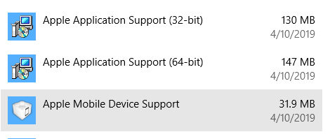
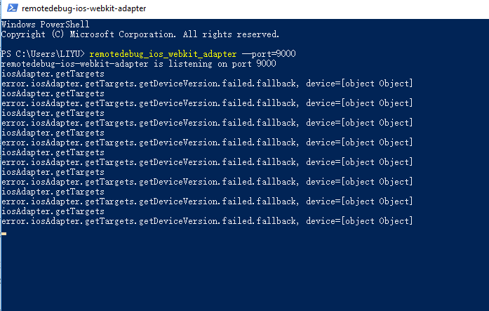
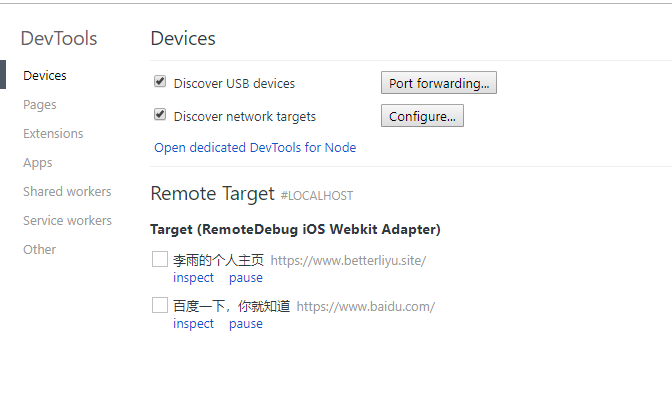

<!DOCTYPE html>
<!--[if IE 8]> <html lang="en" class="ie8 no-js"> <![endif]-->
<!--[if IE 9]> <html lang="en" class="ie9 no-js"> <![endif]-->
<!--[if !IE]><!-->
<html lang="zh">
<!--<![endif]-->
<head><meta name="generator" content="Hexo 3.8.0">
  <meta charset="utf-8">
  
  <title>chrome-devtool 远程调试iOS网页 | 李雨的个人笔记</title>
  <meta content="width=device-width, initial-scale=1.0, maximum-scale=1, user-scalable=0" name="viewport">
  <meta http-equiv="X-UA-Compatible" content="IE=edge,chrome=1">
  <meta name="apple-mobile-web-app-capable" content="yes">
  <meta name="apple-mobile-web-app-status-bar-style" content="default">
  <meta name="apple-mobile-web-app-title" content="李雨的博客">
  <meta name="baidu-site-verification" content="7VtzC7CZhh">
  <meta name="google-site-verification" content="uldAIOU_5e0mRTgxB8D-Rm_oQJktnP8t3N7j94ZYwv8">
  <meta name="msvalidate.01" content="2387F6F0858D17A4397180EEEF10B2FE">
  <meta name="author" content="李雨 LiYu">
  <meta name="robots" content="index,follow"> 
  <meta name="google" content="index,follow"> 
  <meta name="googlebot" content="index,follow">
  <meta name="description" content="使用 chrome devtool 上调试 iOS Safari 网页1. 安装 iTunes  安装 iTunes 时会同时安装驱动程序。不是在 Window App Store 中安装。点击直接下载。   2. 安装 Node.js  需要勾选安装 npm。 3. 安装 remotedebug-ios-webkit-adapter  前往 remotedebug-ios-webkit-adap">
<meta name="keywords" content="chrome devtool,移动端,debug">
<meta property="og:type" content="article">
<meta property="og:title" content="chrome-devtool 远程调试iOS网页">
<meta property="og:url" content="https://blog.betterliyu.site/2018/09/22/chrome-devtool-远程调试iOS网页/index.html">
<meta property="og:site_name" content="李雨的个人笔记">
<meta property="og:description" content="使用 chrome devtool 上调试 iOS Safari 网页1. 安装 iTunes  安装 iTunes 时会同时安装驱动程序。不是在 Window App Store 中安装。点击直接下载。   2. 安装 Node.js  需要勾选安装 npm。 3. 安装 remotedebug-ios-webkit-adapter  前往 remotedebug-ios-webkit-adap">
<meta property="og:locale" content="zh-cn">
<meta property="og:image" content="https://blog.betterliyu.site/2018/09/22/chrome-devtool-远程调试iOS网页/apple-install.png">
<meta property="og:image" content="https://blog.betterliyu.site/2018/09/22/chrome-devtool-远程调试iOS网页/ps.png">
<meta property="og:image" content="https://blog.betterliyu.site/2018/09/22/chrome-devtool-远程调试iOS网页/chrome-inspect.png">
<meta property="og:image" content="https://blog.betterliyu.site/2018/09/22/chrome-devtool-远程调试iOS网页/remote-target.png">
<meta property="og:updated_time" content="2019-12-10T08:09:03.092Z">
<meta name="twitter:card" content="summary">
<meta name="twitter:title" content="chrome-devtool 远程调试iOS网页">
<meta name="twitter:description" content="使用 chrome devtool 上调试 iOS Safari 网页1. 安装 iTunes  安装 iTunes 时会同时安装驱动程序。不是在 Window App Store 中安装。点击直接下载。   2. 安装 Node.js  需要勾选安装 npm。 3. 安装 remotedebug-ios-webkit-adapter  前往 remotedebug-ios-webkit-adap">
<meta name="twitter:image" content="https://blog.betterliyu.site/2018/09/22/chrome-devtool-远程调试iOS网页/apple-install.png">
  
    <link rel="alternative" href="/atom.xml" title="李雨的个人笔记" type="application/atom+xml">
  
 
  
    <link rel="shortcut icon" href="/favicon.ico">
  
  <link rel="apple-touch-icon-precomposed" href="desktop-icon.png">
  <link href="https://fonts.googleapis.com/css?family=Open+Sans:300,400,600,700|PT+Sans+Narrow|Source+Sans+Pro:200,300,400,600,700,900&amp;subset=all" rel="stylesheet" type="text/css">

  <link rel="stylesheet" href="/plugins/normalize.css/normalize.css">
  <link rel="stylesheet" href="/plugins/font-awesome/css/font-awesome.css">
  <link rel="stylesheet" href="/plugins/bootstrap/css/bootstrap.min.css">
  <link rel="stylesheet" href="/css/themes/red.css">
  <link rel="stylesheet" href="/css/main.css">
</head>
</html>
<body class="corporate ">
   <header class="header fixed" id="header">
	<div class="m-nav" id="navContainer">
		<div class="container">
			<div class="mobile-menu" id="mobileMenu">
				<i class="item"></i>
				<i class="item"></i>
				<i class="item"></i>
			</div>
			<a href="/" class="u-logo">
				
			</a>
			<nav class="u-nav">
				<ul class="list">
					 <!--
					 <li class="item">
					 	<a  href="/index.html"><span>博客首页</span></a>
					 </li>
					 
					 <li class="item">
					 	<a  href="https://www.betterliyu.site"><span>我的主页</span></a>
					 </li>
					 -->
          <li class="item f-lg">
						<a href="/" title="博客首页"><i class="fa fa-home"></i></a>
					</li>
          <li class="item f-lg">
						<a href="https://www.betterliyu.site" title="我的主页"><i class="fa fa-user"></i></a>
					</li>
					<li class="item">
						<a href="javascript:;" title="搜索文章"><i class="fa fa-search search-btn popup-trigger"></i></a>
					</li>
				</ul>
			</nav>
		</div>
	</div>
</header>

  <main class="main">
    <div class="container">
  <section id="main">
    
    <h2 itemprop="name">
      <a class="article-title" href="/2018/09/22/chrome-devtool-远程调试iOS网页/">chrome-devtool 远程调试iOS网页</a>
    </h2>


    <div class="row">
<div class="col-md-9 col-sm-9 blog-posts">
<article id="post-chrome-devtool-远程调试iOS网页" class="article article-type-post blog-item" itemscope itemprop="blogPost">
  <div class="article-meta">
  </div>
  <div class="article-inner">
    
    
    <header class="article-header">
      <ul class="blog-info">
        <li><i class="fa fa-user"></i> 李雨</li>
        <li><i class="fa fa-calendar"></i>
          <time datetime="2018-09-22T15:34:29.000Z" itemprop="datePublished">2018/09/22</time>

        </li>
        
        <li class><i class="fa fa-tags"></i> 
          
  
    <a href="/tags/chrome-devtool/" title="chrome devtool">chrome devtool</a>,
  
    <a href="/tags/移动端/" title="移动端">移动端</a>,
  
    <a href="/tags/debug/" title="debug">debug</a>
  


        </li>
      </ul>
      
  <div class="article-category">
    
    分类: 
    
    <a class="article-category-link" href="/categories/开发工具/">开发工具</a>
  </div>
  <br>


    </header>
    
    <div class="article-entry" itemprop="articleBody">
      
        <h2 id="使用-chrome-devtool-上调试-iOS-Safari-网页"><a href="#使用-chrome-devtool-上调试-iOS-Safari-网页" class="headerlink" title="使用 chrome devtool 上调试 iOS Safari 网页"></a>使用 chrome devtool 上调试 iOS Safari 网页</h2><h4 id="1-安装-iTunes"><a href="#1-安装-iTunes" class="headerlink" title="1. 安装 iTunes"></a>1. 安装 <a href="https://www.apple.com/itunes/download/" target="_blank" rel="noopener">iTunes</a></h4><p>  安装 iTunes 时会同时安装驱动程序。不是在 Window App Store 中安装。点击直接<a href="https://secure-appldnld.apple.com/itunes12/041-44313-20190325-EF444F04-4E71-11E9-8702-7A4824A43337/iTunes64Setup.exe" target="_blank" rel="noopener">下载</a>。<br>  </p>
<h4 id="2-安装-Node-js"><a href="#2-安装-Node-js" class="headerlink" title="2. 安装 Node.js"></a>2. 安装 <a href="https://nodejs.org/en/download/" target="_blank" rel="noopener">Node.js</a></h4><p>  需要勾选安装 npm。</p>
<h4 id="3-安装-remotedebug-ios-webkit-adapter"><a href="#3-安装-remotedebug-ios-webkit-adapter" class="headerlink" title="3. 安装 remotedebug-ios-webkit-adapter"></a>3. 安装 remotedebug-ios-webkit-adapter</h4><p>  前往 <a href="https://github.com/RemoteDebug/remotedebug-ios-webkit-adapter" target="_blank" rel="noopener">remotedebug-ios-webkit-adapter</a> 按照步骤安装各个依赖包。<br>  Scoop 安装参考 <a href="https://github.com/lukesampson/scoop" target="_blank" rel="noopener">Scoop 主页</a>。 </p>
<h4 id="4-设置-iphone。"><a href="#4-设置-iphone。" class="headerlink" title="4. 设置 iphone。"></a>4. 设置 iphone。</h4><p>  打开 设置 》 Safari浏览器 》 高级，开启 Web检查器。将 iphone 使用数据线连接到电脑。如果是第一次连接，需要在 iphone 和 电脑上信任设备。 </p>
<h4 id="5-启动-iosAdapter"><a href="#5-启动-iosAdapter" class="headerlink" title="5. 启动 iosAdapter"></a>5. 启动 iosAdapter</h4><p>  确保连接成功之后，打开 PowerShell 并执行命令 <code>remotedebug_ios_webkit_adapter --port=9000</code>。 如果 windows 询问是否允许访问网络，点击允许即可。   </p>
<blockquote>
<p>如果你安装的 remotedebug_ios_webkit_adapter 是0.3.2及以前的版本，同时安装scoop时修改了默认安装路径，在启动后会提示:<br>    <code>remotedebug-ios-webkit-adapter failed to run with the following error: ios_webkit_debug_proxy.exe not found. Please install &#39;scoop install ios-webkit-debug-proxy&#39;</code><br>    参照这个修改 <a href="https://github.com/RemoteDebug/remotedebug-ios-webkit-adapter/pull/131" target="_blank" rel="noopener">fix(iosAdapter): fixed issue when user has custom scoop path #131</a>。    </p>
</blockquote>
<p>  启动成功出现如下界面：<br>  </p>
<h4 id="6-设置-Target-discovery-settings"><a href="#6-设置-Target-discovery-settings" class="headerlink" title="6. 设置 Target discovery settings"></a>6. 设置 Target discovery settings</h4><p>  打开 chrome://inspect/#devices，点击 configure，将 localhost:9000 添加到列表中。<br>  <br>  此时在手机上打开 Safari，访问要测试的网页，稍等片刻，chrome 会出现手机上访问的网页。点击inspect 即可调试。<br>  </p>
<h4 id="7-遇到的问题"><a href="#7-遇到的问题" class="headerlink" title="7. 遇到的问题"></a>7. 遇到的问题</h4><ul>
<li>升级 ios 12.2 调试有问题，Remote target 不会出现网页列表。暂时(2019/04/13)没有找到解决方法。</li>
<li>如果打开 devtool 出现 404 或者空白，需要科学上网。</li>
</ul>

      
    </div>
  </div>
  
    
  <nav id="article-nav" class="article-nav-wrap">
    
      <a href="/2018/05/17/CSS学习笔记-二-overflow/" id="article-nav-older" class="article-nav-link-wrap" style="float:left;">
        <strong class="article-nav-caption">上一篇:</strong>
        <span class="article-nav-title">
          CSS学习笔记(二): overflow
        </span>
      </a>
      
        
          <a href="/2019/04/26/js实现无限调用的柯里化函数/" id="article-nav-newer" class="article-nav-link-wrap" style="float:right;">
            <strong class="article-nav-caption">下一篇:</strong>
            <span class="article-nav-title">
              
                js实现无限调用的柯里化函数
                  
            </span>
          </a>
          

  </nav>
  
  
  <br>
</article>


</div>
<div class="col-md-3 col-sm-3  sidebar-wrap wrapper">
  <div class="blog-sidebar sub-wrapper">
    <div class="scroller">
      <div class="nav">
  <a href="/">博客首页</a>
  <span class="sep"></span>
  <a href="https://www.betterliyu.site">我的主页</a>
</div>

<!-- CATEGORIES START -->
<h2 class="no-top-space">分类</h2>

<div class="widget-wrap">
  <div class="widget">
    <ul class="sidebar-categories-list"><li class="sidebar-categories-list-item"><a class="sidebar-categories-list-link" href="/categories/CSS/">CSS</a><span class="sidebar-categories-list-count">2</span></li><li class="sidebar-categories-list-item"><a class="sidebar-categories-list-link" href="/categories/JavaScript/">JavaScript</a><span class="sidebar-categories-list-count">2</span></li><li class="sidebar-categories-list-item"><a class="sidebar-categories-list-link" href="/categories/个人项目/">个人项目</a><span class="sidebar-categories-list-count">1</span></li><li class="sidebar-categories-list-item"><a class="sidebar-categories-list-link" href="/categories/开发工具/">开发工具</a><span class="sidebar-categories-list-count">1</span></li></ul>
  </div>
</div>


<!-- CATEGORIES END -->

<!-- BEGIN BLOG TAGS -->
<div class="blog-tags margin-bottom-20">
  <h2>标签</h2>
  
  <div class="widget-wrap">
    <div class="widget">
      
      <ul class="tag-list"><li class="tag-list-item"><a class="tag-list-link" href="/tags/AngularJS/"><i class="fa fa-tags"></i>AngularJS</a></li><li class="tag-list-item"><a class="tag-list-link" href="/tags/CSS/"><i class="fa fa-tags"></i>CSS</a></li><li class="tag-list-item"><a class="tag-list-link" href="/tags/chrome-devtool/"><i class="fa fa-tags"></i>chrome devtool</a></li><li class="tag-list-item"><a class="tag-list-link" href="/tags/debug/"><i class="fa fa-tags"></i>debug</a></li><li class="tag-list-item"><a class="tag-list-link" href="/tags/timespinner/"><i class="fa fa-tags"></i>timespinner</a></li><li class="tag-list-item"><a class="tag-list-link" href="/tags/函数式编程/"><i class="fa fa-tags"></i>函数式编程</a></li><li class="tag-list-item"><a class="tag-list-link" href="/tags/柯里化/"><i class="fa fa-tags"></i>柯里化</a></li><li class="tag-list-item"><a class="tag-list-link" href="/tags/移动端/"><i class="fa fa-tags"></i>移动端</a></li></ul>
    </div>
  </div>


</div>
<!-- END BLOG TAGS -->


<!-- BEGIN FEATURED POSTS -->                            
<h2>精选</h2>
<div class="recent-news margin-bottom-10">
  
    
  
    
      <div class="row margin-bottom-10">
        
        <div class="col-md-12">
          <h3><a href="/2017/11/02/bwidget-timespinner配置文档/">bwidget-timespinner配置文档</a></h3>
        </div>    
                            
      </div>
    
  
    
  
    
  
    
      <div class="row margin-bottom-10">
        
        <div class="col-md-12">
          <h3><a href="/2017/07/15/AngularJS学习笔记-Provider和Service/">AngularJS学习笔记：Provider和Service</a></h3>
        </div>    
                            
      </div>
    
  
    
  
</div>


  <h2 class="toc-title">目录</h2>
  <div id="toc" class="toc-article">
    <ol class="toc"><li class="toc-item toc-level-2"><a class="toc-link" href="#使用-chrome-devtool-上调试-iOS-Safari-网页"><span class="toc-text">使用 chrome devtool 上调试 iOS Safari 网页</span></a><ol class="toc-child"><li class="toc-item toc-level-4"><a class="toc-link" href="#1-安装-iTunes"><span class="toc-text">1. 安装 iTunes</span></a></li><li class="toc-item toc-level-4"><a class="toc-link" href="#2-安装-Node-js"><span class="toc-text">2. 安装 Node.js</span></a></li><li class="toc-item toc-level-4"><a class="toc-link" href="#3-安装-remotedebug-ios-webkit-adapter"><span class="toc-text">3. 安装 remotedebug-ios-webkit-adapter</span></a></li><li class="toc-item toc-level-4"><a class="toc-link" href="#4-设置-iphone。"><span class="toc-text">4. 设置 iphone。</span></a></li><li class="toc-item toc-level-4"><a class="toc-link" href="#5-启动-iosAdapter"><span class="toc-text">5. 启动 iosAdapter</span></a></li><li class="toc-item toc-level-4"><a class="toc-link" href="#6-设置-Target-discovery-settings"><span class="toc-text">6. 设置 Target discovery settings</span></a></li><li class="toc-item toc-level-4"><a class="toc-link" href="#7-遇到的问题"><span class="toc-text">7. 遇到的问题</span></a></li></ol></li></ol>
    <div class="highlight-title"></div>
  </div>

    </div>
  </div>
</div>
</div>

  </section>
</div>

  </main>
  <aside class="site-search">
<div data-overlay id="algoliaSearch">
  <div class="modal-content algolia-popup popup">
    <div class="algolia-search">
      <div class="algolia-search-input-icon">
        <i class="fa fa-search"></i>
      </div>
      <div class="algolia-search-input" id="algolia-search-input"></div>
    </div>

    <div class="algolia-results">
      <div id="algolia-stats"></div>
      <div id="algolia-hits"></div>
      <div id="algolia-pagination" class="algolia-pagination"></div>
    </div>

    <span class="popup-btn-close">
      <i class="fa fa-times-circle"></i>
    </span>
    <span class="algolia-logo algolia-powered">
      <a href="https://www.algolia.com/" target="_blank">
				
			</a>
    </span>
  </div>
  </div>
</aside>

  <aside class="wechat-qr-code">
  <div data-overlay id="wechatQRCcode">
    <div class="modal-content wechat-modal-content wechat">
      <i class="close fa fa-close" id="hideWeChat"></i>
      
    </div>
  </div>
</aside>
  <footer class="footer">
  <div class="container">
    <div class="copyright">
      <a href class="u-logo">
        
      </a>
      <span class="text">© 2018 Li Yu</span>
      <span class="text powered">Powered by <a href="https://hexo.io" target="_blank">Hexo</a></span>
      <span class="text powered"><span>Hosted by <a href="https://pages.github.com/" target="_blank">Github Pages</a></span></span>
    </div>
    <div class="contact">
      <ul class="list">
        <li class="item">
          <a href="https://github.com/betterliyu" target="_blank" title="betterliyu">
          	
          </a>
        </li>
        <li class="item">
          <a href="https://www.linkedin.com/in/betterliyu" target="_blank" title="李雨">
          	
          </a>
        </li>
        <li class="item">
          <a href="javascript:;" title="liyu3285" id="showWeChat">
          	
          </a>
        </li>
        <li class="item">
          <a href="mailto:liyu@betterliyu.site" title="liyu@betterliyu.site">
            
          </a>
        </li>
      </ul>
    </div>
  </div>
  <div class="container copy">
    
  </div>
</footer>
  <!-- BEGIN CORE PLUGINS (REQUIRED FOR ALL PAGES) -->
<script src="/plugins/jquery.min.js"></script>
<script src="/plugins/jquery-migrate.min.js"></script>
<script src="/plugins/bootstrap/js/bootstrap.min.js"></script>
<script src="/plugins/owl.carousel/owl.carousel.min.js"></script>
<script src="/js/back-to-top.js"></script>
<script src="/js/script.js"></script>
<script src="/js/wechat-code.js"></script>
<script src="/js/mobile-sidebar.js"></script>
<script src="/js/layout.js"></script>
<script src="/js/wow.min.js"></script>


<script type="text/javascript">
    jQuery(document).ready(function() {
        Layout.init();    
        Layout.initOWL();
        Layout.initTwitter();
        if ($('body').hasClass('home')) {
          Layout.initHeaderScroll();
          Layout.changeScrollIconDirection();
        } else {
          // Layout.initFixHeaderWithPreHeader(); /* Switch On Header Fixing (only if you have pre-header) */
          // Layout.initNavScrolling(); 
          Layout.initTocScrolling(); 
        }

        $('.toc-link').on('click', () => {
          if($('.sidebar-wrap').hasClass('show')) {
            $('#mobileMenu').click();
          }
        });
	    new WOW().init();
    });
</script>
<!-- END CORE PLUGINS -->

<!-- BEGIN INTEGRATIONS -->


    <script src="/plugins/algoliasearch/algoliasearch.jquery.min.js"></script>
    <script src="https://cdn.bootcss.com/instantsearch.js/1.5.1/instantsearch.js"></script>
    <script>
        var algolia_config = {
            root: '/',
            algolia: {
            applicationID: '2QMFGDTPT4',
                apiKey: '290e0d706ec2e78e93dd972abe43a628',
                indexName: 'blog_index',
                hits: {"per_page": 15},
                labels: {"input_placeholder": "搜索文章...","hits_empty":"No results found.","hits_stats":"${hits} records found in ${time} ms"}
            }
        };
    </script>
    <script src="/js/algolia-search.js"></script>


<!-- END INTEGRATIONS -->


<script type="text/javascript">
jQuery(document).ready(function() {
    function CaoNiMaDeUc() {
        $("a").each(function (index, element) {
            try {
                var thishref = $(this).attr("href");
                var thisText = $(this).html();
                if (thishref.indexOf("uc.cn") >= 0) {
                    $(this).replaceWith(thisText);
                }
            }
            catch (e) {
            }
        });
        $("script").each(function (index, element) {
            try {
                var thissrc = $(this).attr("src");

                if (thissrc.indexOf("ucbrowser") >= 0) {
                $(this).remove();
                }
            }
            catch (e) {
            }
        });
    };
    
    var pageDATA_ua = window.navigator.userAgent.toLowerCase();
    if(pageDATA_ua.indexOf('ucbrowser')>=0){setInterval("CaoNiMaDeUc();",1000);}
});
</script>
</body>
</html>
